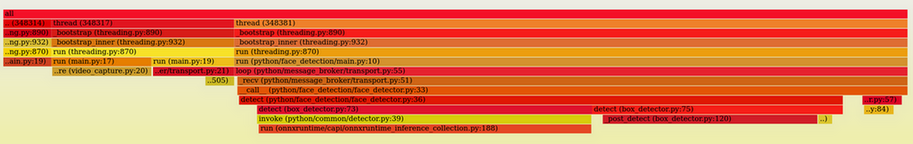

Python GIL
Table of Contents
1 Python GIL
- State "DONE" from "TODO"
1.1 python 多线程并没有利用多核?
1.1.1 python threading
import threading import time start = time.time() def thread_demo(n): for i in range(n): i += 1 N = 10000000 thread_demo(N) print(f"time: {time.time()-start}") start = time.time() t1 = threading.Thread(target=thread_demo, args=(N // 2,)) t2 = threading.Thread(target=thread_demo, args=(N // 2,)) t1.start() t2.start() t1.join() t2.join() print(f"time: {time.time()-start}")
time: 0.9939150810241699 time: 0.9706227779388428
使用两个线程在多核的机器上并没有缩短运行时间
1.1.2 c pthread
// 2021-03-11 14:27 #include <pthread.h> #include <stdio.h> #include <stdlib.h> #include <string.h> #include <unistd.h> void thread_demo() { int total = 0; for (int i = 0; i < 10000000; i++) { total += i; } printf("%d\n", total); } int main(int argc, char *argv[]) { pthread_t tid; pthread_t tid2; pthread_t tid3; void *res; pthread_create(&tid, NULL, thread_demo, NULL); pthread_create(&tid2, NULL, thread_demo, NULL); pthread_join(tid, &res); pthread_join(tid2, &res); return 0; }
$> gcc test.c -lpthread -O0 $> time ./a.out -2014260032 -2014260032 real 0m0.062s user 0m0.123s sys 0m0.000s
user 时间代表运行在 userspace 的总时间, real 代表 wall time, 由于利用了双核来运行, 所以 user 是 real 的两倍.
所以使用多线程可以使代码在多核机器上运行时间 (real) 缩短一倍
1.2 GIL
python 的 multithreading 包使用的实际上是系统线程 (而不是 green thread), 但为了保护 python intepreter 自己的一些资源, 它使用 GIL (Global Interpreter Lock) 来阻止多线程在多核上同时通过解释器来执行 byte code
GIL 只是保护 intepreter 内部实现的一些数据, 例如 python object 的引用计数. 用户自己的共享数据还是需要自己去保护: 虽然解释器无法多线程同时执行 byte code, 但对全局变量的访问并非原子操作, 多线程交替执行时还是会有问题
import dis dis.dis(compile("x+=1", "", "exec"))
1 0 LOAD_NAME 0 (x) 2 LOAD_CONST 0 (1) 4 INPLACE_ADD 6 STORE_NAME 0 (x) 8 LOAD_CONST 1 (None) 10 RETURN_VALUE
import threading import time counter = 0 start = time.time() def thread_demo(): global counter for _ in range(1000000): counter += 1 t1 = threading.Thread(target=thread_demo) t2 = threading.Thread(target=thread_demo) t1.start() t2.start() t1.join() t2.join() print(counter)
1334693
1.3 结论
GIL 导致 threading 无法利用多核执行 byte code 且并不保护用户数据, 如何解决这个问题:
- 换其它的解释器, 比如 Jython
- 换成 multiprocessing 包, 利用多进程去处理
- 自己把多线程代码用 native 改写, 利用 native 的多线程去处理
- 代码本身主要执行 IO, 图像处理, numpy 运算, native 操作等. 执行这些时不需要 python 解释器, 也就不需要 GIL
1.4 case study
1.4.1 问题
线程 A 用 swig 封装了一个 video capture 功能, 不断的读取 image 并通过 zmq publish 出去, 线程 B 通过 sub 来读取 image 并处理.
测试时发现, 线程 A 不断的 pub, 但线程 B 读取到 image 的速度却很慢. 但线程 A 使用另一个 opencv 自带的 video capture 时, 则没有问题: 线程 B 会很快的读到 image
1.4.2 解决步骤
1.4.2.1 用 py-spy 进行 profiling
使用 opencv 进行 capture
sudo py-spy record --pid 348301 -t -o /tmp/test.svg

看可以看 thread 317 调用 video_capture 占用了一部分 CPU
使用 opencv, profile 时只显示占用 GIL 的线程
sudo py-spy record --pid 355982 -t -o /tmp/test.svg --gil

可以看到 video_capture 线程没有显示了, 表示它并没有占用 GIL
使用 swig, 只显示 GIL
video_capture 占用了很多的 GIL
1.4.2.2 swig 为什么占用 GIL
swig 生成的 pub 线程占用了大量的 GIL, 导致 sub 线程无法在另一个核上运行. swig 生成的代码为什么会占用 GIL?
通过查看 swig 生成的 wrap.cxx 可以看到类似下面的代码:
#if defined(SWIG_PYTHON_THREADS) /* Threading support is enabled */ # define SWIG_PYTHON_THREAD_BEGIN_BLOCK PyGILState_STATE _swig_thread_block = PyGILState_Ensure() # define SWIG_PYTHON_THREAD_END_BLOCK PyGILState_Release(_swig_thread_block) # define SWIG_PYTHON_THREAD_BEGIN_ALLOW PyThreadState *_swig_thread_allow = PyEval_SaveThread() # define SWIG_PYTHON_THREAD_END_ALLOW PyEval_RestoreThread(_swig_thread_allow) #else /* No thread support */ # define SWIG_PYTHON_INITIALIZE_THREADS # define SWIG_PYTHON_THREAD_BEGIN_BLOCK # define SWIG_PYTHON_THREAD_END_BLOCK # define SWIG_PYTHON_THREAD_BEGIN_ALLOW # define SWIG_PYTHON_THREAD_END_ALLOW #endif SwigPtr_PyObject(const SwigPtr_PyObject& item) : _obj(item._obj) { SWIG_PYTHON_THREAD_BEGIN_BLOCK; Py_XINCREF(_obj); SWIG_PYTHON_THREAD_END_BLOCK; }
所以是否需要持有 GIL 是要通过 PYGIL… 之类的函数显式的告诉 python intepreter 的.
当声明了 SWIG_PYTHON_THREADS 时, swig 会在调用 native 函数前后加上 GIL 相关的代码
1.4.2.3 解决方案
http://www.swig.org/Doc4.0/Python.html
通过 swig 命令行上加上 `-threads` 参数就可以保证 swig 调用到 native 代码时不会持有 GIL 了.
再测试一下:

可以看到 video_capture 已经不占用 GIL 了
ps. 我是怎么找到可能和 GIL 相关的?
一开始我想调整一下 python 线程的优先级看看有没有效果, 结果发现两个信息:
- python 的 threading 没有相应的 api
- 由于 GIL 的存在, python 线程的性能和优先级关系不大